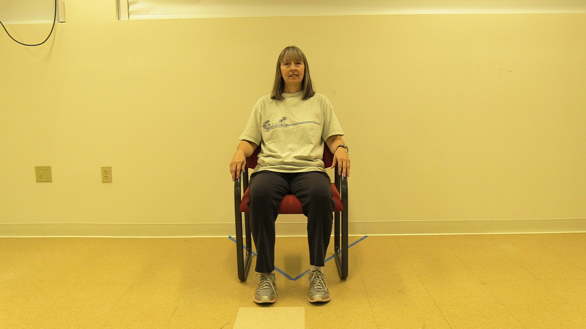
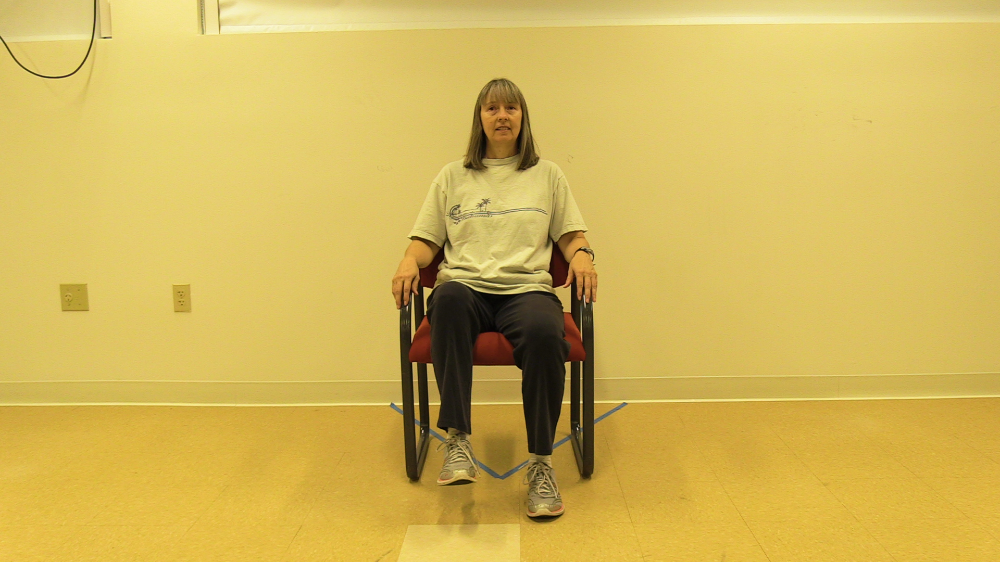
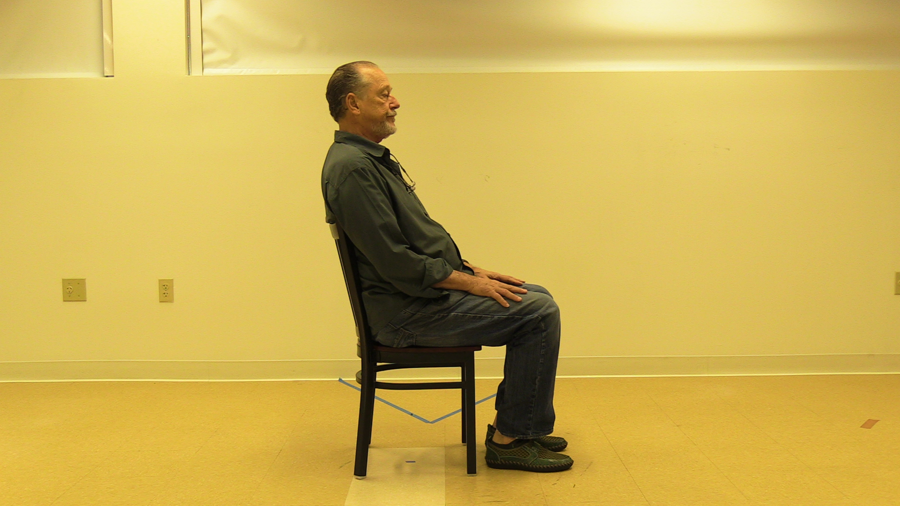
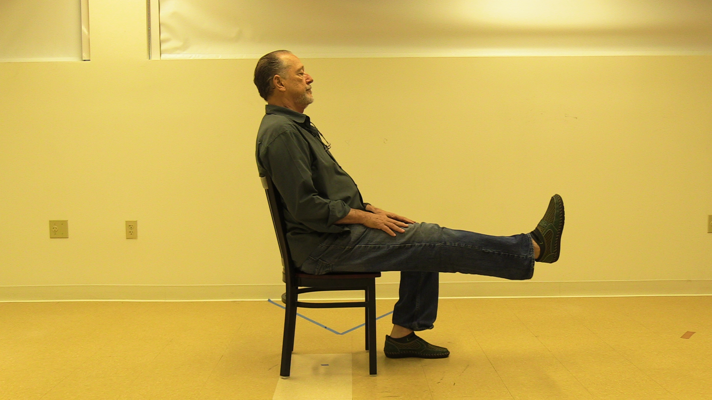
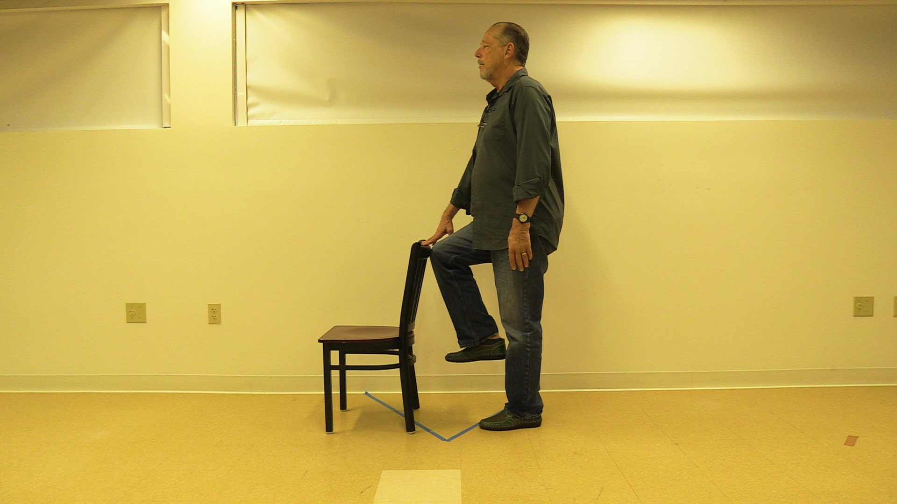

Cardio: Seated March
This exercise is to build the endurance and strength in your legs. Perform 3 sets of 45 seconds.
Equipment:
Sturdy chair
*Note- You will feel your breathing rate and heart rate increase slightly during this exercise. You may also feel the muscles in the front of your hips working.
Instructions:
- Start seated tall in the chair.
- Scoot forward slightly, so you are not resting your back in the back rest.
- Keeping the knees bent, alternate raising and lowering one knee at a time.
- Continue the exercise for 45 seconds.
- Repeat 2 more times. Remember you need to perform 3 sets of 45 seconds.
Making it harder (more challenging):
- Start seated tall in the chair.
- Scoot forward slightly, so you are not resting your back in the back rest.
- Keeping the knees bent, alternate raising and lowering one knee at a time.
- Continue the exercise for 60 seconds.
- Repeat 3 more times. Remember you need to perform 3 sets of 45 seconds.
Making it easier (less challenging):
- Start seated tall in the chair, but you may rest your back on the backrest.
- Keeping the knees bent, alternate raising and lowering one knee at a time.
- Continue the exercise for 30 seconds.
- Repeat 2 more times. Remember you need to perform 3 sets of 45 seconds.
Initial Position | Final Position |
 |  |
Lower Body: Quad Exercise
This exercise is to strengthen the muscles in your thigh. Perform 3 sets of 10-15 repetitions on each leg.
Equipment:
Sturdy chair, theraband (more challenging only)
*Note- You will feel the muscles in the front of your thigh working.
Instructions:
- Begin by sitting in the chair with your feet firmly placed on the ground.
- Straighten one leg out in front of you all the way, tightening the muscles in the thigh.
- Return the foot back to the ground.
- This is one repetition. Remember you need to do 10-15 repetitions on each leg.
Making it harder (more challenging):
- Tie the theraband to the back leg of the chair.
- Sit in the chair and loop one foot through the theraband.
- Straighten one leg out in front of you all the way, tightening the muscles in the thigh.
- Return the foot back to the ground.
- This is one repetition. Remember you need to do 10-15 repetitions on each leg.
Making it easier (less challenging):
- Begin seated in the chair with your feet placed on the ground.
- Tighten the muscles in the thigh to try to straighten your leg in front of you as much as you can.
- Return the foot back to the ground.
- This is one repetition. Remember you need to do 10-15 repetitions on each leg.
Initial Position | Final Position |
 |  |
Balance: Single Leg Balance
This exercise is to improve your balance and the muscles in your legs that help with balance. Perform 3-5 sets on each leg.
Equipment:
Sturdy chair (or can perform at counter top for more stability)
*Note- You will feel the muscles in your ankles and hip working.
Instructions:
- Stand tall holding on to the chair or counter.
- Bend on knee, so you are standing on one leg.
- Try to hold for 30 seconds, then switch legs.
- This is one repetition. Remember you need to perform 3-5 sets on each leg.
Making it harder (more challenging):
- Stand tall holding on to the chair or counter.
- Bend on knee, so you are standing on one leg.
- Once you have your balance, try to lift one hand up and eventually both hands.
- Try to hold for 30 seconds, then switch legs.
- This is one repetition. Remember you need to perform 3-5 sets on each leg.
Making it easier (less challenging):
- Stand tall holding on to the chair or counter.
- Bend on knee, so you are standing on one leg.
- Try to hold for 10-15 seconds, then switch legs.
- This is one repetition. Remember you need to perform 3-5 sets on each leg.
Initial Position | Final Position |

|  |